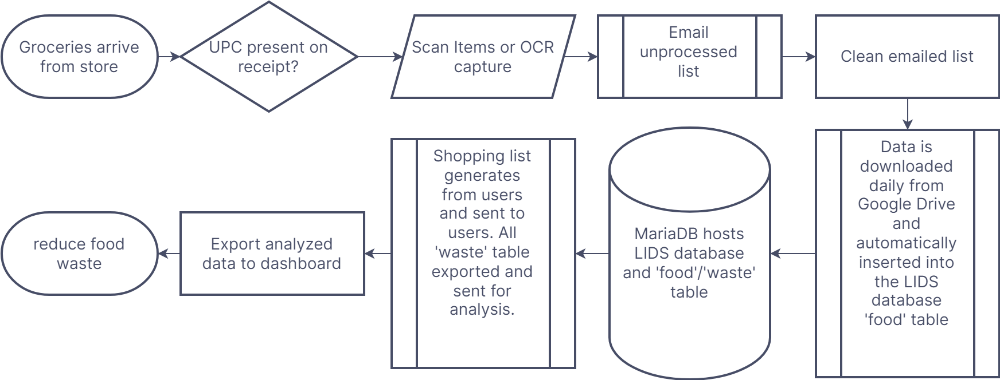
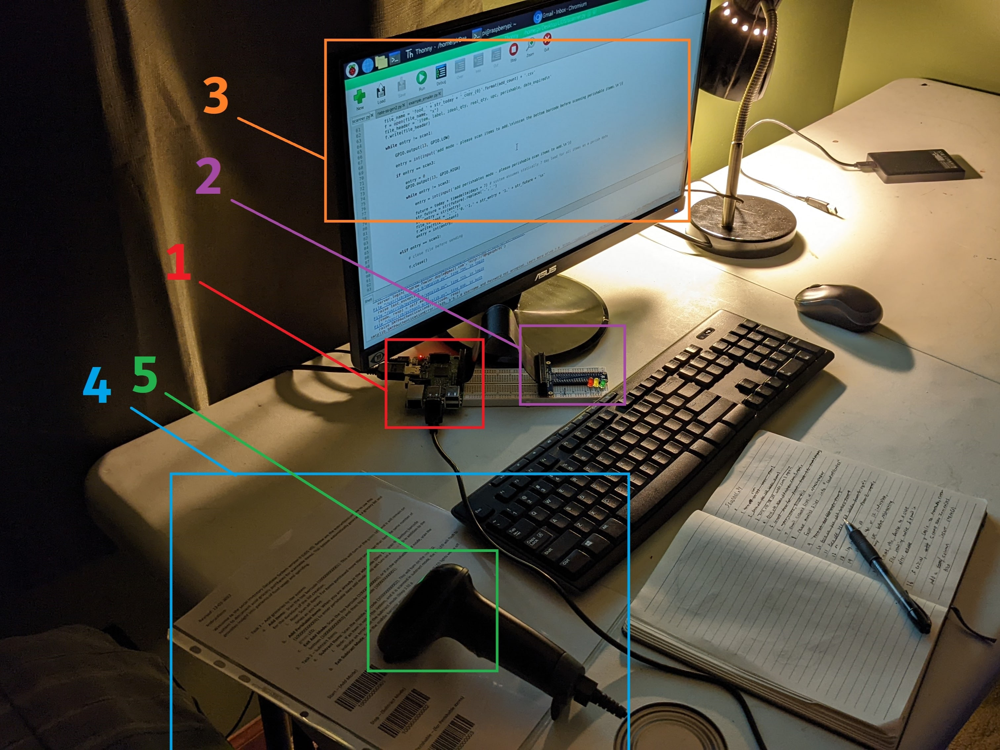

Food Waste Control - Local Inventory Database System (LIDS)

Problem
A Typical American tosses nearly a ton of garbage away every year or 5 pounds a day. Roughly 20% of that waste is food at the consumer level.
In my home, I would like to reduce the waste from expired food by a minimum of 20% and cut excess spending by at least 10% over the course of 6 months. I will measure waste by scanning items that enter in to the system and get exited at ‘wasted’ items. One caveat is that only ‘regular’ foods are accounted for. This means no parties or fancy dinners generate ‘waste’ by this definition.
Approach
The solution I came up with I call LIDS. LIDS is Local Inventory Database System. At a high level, it is a system that automatically reminds users about expiring foods and provide a grocery list to them which saves time every week, eliminates guess work, and helps avoid duplicate purchases.
The flowchart below is a simplifed on from the whiteboard original it is based on. I referenced the whiteboard version when I started coding LIDS.
I tried a few things before I landed on the below configuration for my database shown in the image below. Each element is described in the list under the image.

- Use a Raspberry Pi 3 which is currently hooked into all the peripherals including monitor, keyboard, mouse, and scanner, but it is currently running ‘headless’ or without everthing but the scanner.
- The T-cobbler and ribbon connects the LED circuit to the GPIO pins on the Raspberry Pi.
- On the monitor is the Python code that does 3 main things: It scans items in or out, adds to the database, and sends the weekly data and grocery list to the end user.
- The instructions gives the user a reminder on what to do in each use-case, but in the long run, it serves by having the barcodes that turn LIDS on and off add/subtract modes and whether an item perished or is marked as perishable.
- The scanner is the one piece of hardware I had to buy in addition to the Raspberry Pi which was purchased on amazon.com for about $20.